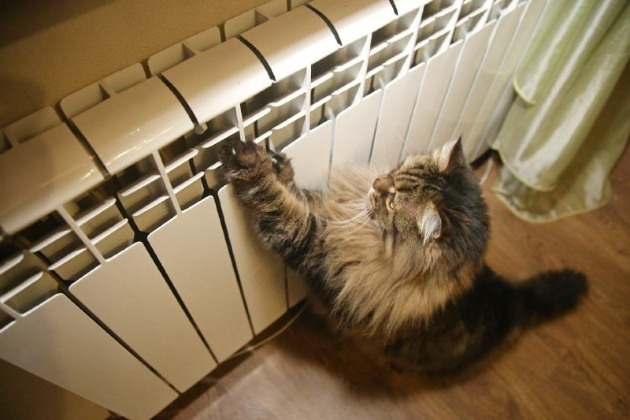

01
Общество и городская среда · событие дня
Отопление осталось включить в 679 домах. Мэр Александр Болдакин поручил завершить подключение до конца недели
Объекты социальной сферы готовы к отопительному сезону на 94%. Тепло есть во всех 160 детских садах и 103 школах. По вопросам отопления можно круглосуточно звонить в диспетчерскую по номерам 05 и 737-911 .…